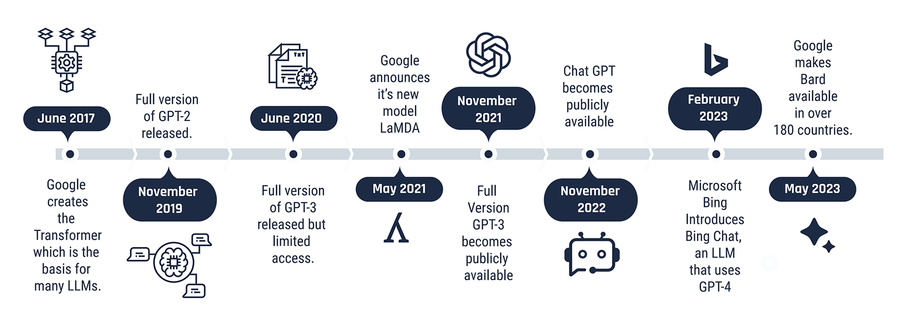
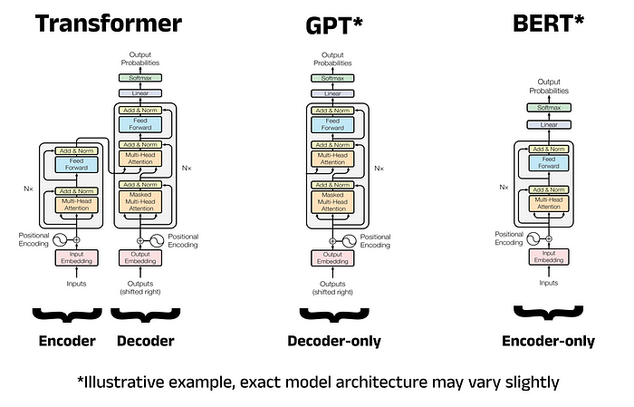

1. Introduction & Histoire des LLM
Les grands modèles de langage (LLM) sont des réseaux neuronaux entraînés sur de vastes quantités de texte afin d’accomplir une large variété de tâches linguistiques : traduction, résumé, génération de texte, question-réponse, etc. Leur évolution est intimement liée aux avancées des architectures de réseaux, à la croissance exponentielle des données disponibles, et à l’augmentation des capacités de calcul.
Tout a commencé avec des modèles classiques comme Word2Vec ou GloVe, avant l'arrivée révolutionnaire des Transformers en 2017 (par Vaswani et al.). Ensuite, des modèles comme BERT (2018) et GPT-2/3/4 ont marqué des étapes majeures dans la compréhension contextuelle et la génération fluide de texte. Aujourd'hui, les LLMs sont utilisés dans des domaines variés : assistants virtuels, diagnostic médical, juridique, finance, création artistique, et plus encore.
Voici une frise chronologique illustrant les grandes étapes de l’évolution des LLM :
2. Architecture des LLM
Les architectures des LLM reposent toutes sur le Transformer, introduit par Vaswani et al. en 2017. Celui-ci remplace les réseaux récurrents par un mécanisme d'attention multi-tête qui traite les séquences en parallèle, permettant ainsi une grande efficacité.
Un Transformer est composé de deux blocs principaux :
- Encodeur : utile pour les tâches de compréhension (ex : BERT)
- Décodeur : utilisé pour la génération de texte (ex : GPT)
BERT (Google, 2018) est un modèle basé uniquement sur l'encodeur. Il apprend de façon bidirectionnelle, c’est-à-dire qu’il tient compte du contexte à gauche et à droite d’un mot. Il excelle dans les tâches de compréhension de texte comme la classification ou les questions-réponses.
GPT (OpenAI) est basé uniquement sur le décodeur. Il génère du texte mot par mot en tenant compte uniquement du contexte précédent (auto-régressif). Il est conçu pour produire du texte fluide et cohérent.
Voici un schéma simplifié des deux architectures :
BERT (Encodeur uniquement)
- Entrée → Embedding → Encodeur × N → Sortie
- Contextualisation bidirectionnelle
- Tâches de compréhension
GPT (Décodeur uniquement)
- Entrée → Embedding → Décodeur × N → Texte généré
- Contextualisation unidirectionnelle (gauche → droite)
- Tâches de génération
Certains modèles modernes comme T5 ou PaLM utilisent l'architecture complète encodeur-décodeur pour transformer toutes les tâches NLP en une tâche de génération de texte.
Voici une illustration comparative de l'architecture Transformer utilisée par BERT et GPT :
3. Fonctionnement des LLM : Pré-entraînement → Fine-tuning → RLHF → Déploiement
Le fonctionnement des grands modèles de langage repose sur plusieurs phases successives et complémentaires :
Pré-entraînement
Le LLM est entraîné à prédire des mots dans d’immenses corpus de texte. Il s’agit d’un apprentissage auto-supervisé sur des tâches comme la modélisation de langage masqué (BERT) ou la prédiction du token suivant (GPT).
- Corpus : Web, livres, Wikipédia, code source…
- Objectif : Apprendre les patterns du langage humain.
- Modèle : Initialisé avec des paramètres aléatoires puis optimisé sur des milliards de jetons.
Fine-tuning (réglage fin)
Le modèle est ensuite adapté à des tâches spécifiques (ex. : résumé, Q&R, classification) via un ensemble de données plus petit et plus ciblé. Cela améliore sa performance sur des cas concrets.
- Approche : Supervised Fine-Tuning (SFT)
- Données : paires question-réponse, exemples annotés
- Exemple : InstructGPT
RLHF (Reinforcement Learning with Human Feedback)
Pour rendre les réponses plus utiles, le LLM est affiné via l’apprentissage par renforcement basé sur des préférences humaines. Il apprend à classer et améliorer ses propres sorties.
- Phase 1 : Collecte de préférences humaines
- Phase 2 : Apprentissage d’un modèle de récompense
- Phase 3 : Optimisation par PPO (Policy Optimization)
Déploiement
Une fois entraîné, le modèle est déployé via une API, sur le cloud ou localement. Il peut être intégré à des applications (chatbots, assistants, systèmes de recommandation...)
Techniques complémentaires
- Prompt engineering : formuler intelligemment les requêtes pour guider le comportement du modèle
- RAG (Retrieval-Augmented Generation) : enrichir les prompts avec de la connaissance externe (base vectorielle)
- Continual Pretraining : affiner un modèle avec de nouvelles données non annotées
Tableau comparatif des approches
| Méthode | But | Données requises | Avantages | Limites |
|---|---|---|---|---|
| Pré-entraînement | Modèle généraliste | Corpus massif (non annoté) | Apprentissage profond des patterns | Coûteux, long, demande GPU |
| Fine-tuning | Spécialisation | Corpus annoté (petit) | Haute performance sur tâche précise | Peut biaiser le modèle |
| RLHF | Alignement avec l'humain | Retours humains | Réponses plus utiles | Complexité d’implémentation |
| Prompt Engineering | Optimisation à la volée | Aucune | Simple, rapide | Moins robuste |
| RAG | Connaissances dynamiques | Base externe (vectorielle) | Informations à jour | Coût d’inférence |
Ces étapes combinées permettent aux LLM d’être à la fois puissants, adaptables et efficaces pour une multitude d’applications.
4. Optimisation des LLMs : Méthodes Avancées
Les grands modèles de langage nécessitent des techniques avancées pour réduire leur coût d'entraînement et d'inférence tout en maintenant leur efficacité. Voici deux méthodes majeures :
🔹 LoRA (Low-Rank Adaptation)
LoRA est une approche qui permet d’adapter un modèle existant en gelant ses poids d'origine et en n'entraînant que des matrices de faible rang supplémentaires. Cela réduit significativement le nombre de paramètres ajustés.
LoRA repose sur une factorisation de matrice où une matrice de poids pré-entraînée W est décomposée en deux matrices de plus faible rang A et B telles que :
ΔW = A × BT
Cela permet de minimiser le nombre de paramètres ajustés tout en conservant la richesse du modèle original.
- Avantages : Réduction du coût de calcul et de mémoire.
- Limites : Moins performant pour certaines tâches complexes nécessitant une mise à jour globale des poids.
🔹 MoE (Mixture of Experts)
MoE repose sur l'activation sélective de sous-modèles appelés "experts" pour traiter différentes parties d’une requête, ce qui permet d'utiliser de grands modèles tout en limitant la charge de calcul.
Dans MoE, un mécanisme de gating G(x) sélectionne dynamiquement un sous-ensemble d'experts Ei, chaque expert ayant son propre ensemble de paramètres Wi :
y = ∑i=1N Gi(x) × Ei(x)
où Gi(x) est une fonction d'activation qui attribue un poids à chaque expert.
- Avantages : Scalabilité accrue et flexibilité.
- Limites : Complexité accrue dans la gestion des experts et latence potentielle due au routage dynamique.
Comparaison des méthodes
| Méthode | Objectif | Avantages | Limites |
|---|---|---|---|
| LoRA | Fine-tuning rapide et peu coûteux | Faible consommation de mémoire | Moins adapté aux tâches nécessitant une refonte du modèle |
| MoE | Modularité et gestion de grands modèles | Scalabilité et optimisation de la charge | Complexité de gestion et latence possible |
Ces deux approches sont complémentaires et peuvent être combinées pour améliorer l'efficacité des modèles de langage.
5. Tendances Actuelles et Comparaison des Modèles de Langage
Les grands modèles de langage (LLM) évoluent rapidement, avec des avancées en matière d'efficacité, de scalabilité et de spécialisation. Voici quelques tendances majeures :
🔹 Tendance 1 : Modèles Open-Source vs Propriétaires
Les modèles de langage se divisent aujourd’hui en deux grandes catégories :
- Modèles propriétaires : Développés par des entreprises comme OpenAI (GPT-4), Google DeepMind (Gemini), ou Anthropic (Claude), ces modèles sont généralement fermés et optimisés pour des performances de pointe. Toutefois, leur opacité en matière d'entraînement et de fonctionnement pose des défis en termes de transparence et de contrôle.
- Modèles open-source : Des alternatives comme LLaMA 2 (Meta), Falcon (Technology Innovation Institute) et DeepSeek (DeepSeek AI) permettent aux chercheurs et ingénieurs de les modifier et de les adapter à des besoins spécifiques, favorisant ainsi une plus grande transparence et une adoption plus large.
🔹 Tendance 2 : Efficacité et Réduction de la Consommation
Avec l’augmentation exponentielle de la taille des modèles, la question de l’efficacité devient centrale. Plusieurs approches sont utilisées pour optimiser la consommation énergétique et le coût :
- Quantization : Réduction de la précision des poids (ex. FP16, INT8) pour accélérer l’inférence et réduire la consommation de mémoire.
- Distillation : Extraction des connaissances d’un modèle volumineux pour entraîner un modèle plus léger sans perte significative de performance.
- Fine-tuning efficace : Approches comme LoRA et AdapterFusion permettent d’adapter un modèle à de nouvelles tâches sans réentraînement complet.
🔹 Tendance 3 : Spécialisation et Fine-Tuning
Plutôt que d'entraîner des modèles généralistes, l'industrie se tourne vers des modèles spécialisés :
- BioGPT : Dédié aux applications biomédicales et à la recherche médicale.
- Codex : Conçu pour la génération et la complétion de code informatique.
- BloombergGPT : Axé sur les domaines de la finance et de l'analyse économique.
- DeepSeek : Un modèle open-source puissant qui se concentre sur la compréhension et la génération de texte en plusieurs langues, notamment en chinois et en anglais.
La course à l’innovation dans le domaine des LLMs ne cesse d’accélérer, avec une attention croissante portée à l'efficacité, la spécialisation et l’accessibilité des modèles.
6. Outils de Veille Utilisés
Recherche et Collecte d'Informations
- Google Scholar : Moteur de recherche académique permettant d'accéder aux articles scientifiques et brevets.
- Arxiv.org & Arxiv-Sanity : Plateforme incontournable pour les prépublications en intelligence artificielle et machine learning.
- Semantic Scholar : Outil avancé d'indexation des articles scientifiques avec des fonctionnalités d'analyse sémantique.
Organisation et Gestion des Sources
- Zotero : Outil de gestion bibliographique permettant de stocker, organiser et citer des articles.
- Mendeley : Alternative à Zotero pour la gestion et l'annotation de références scientifiques.
📡 Veille en Temps Réel
- Feedly : Agrégateur de flux RSS permettant de suivre les publications récentes.
- Twitter/X : Réseau social où chercheurs et laboratoires publient des avancées en temps réel.
- LinkedIn : Plateforme professionnelle utile pour suivre les innovations et conférences en IA.
- Hugging Face Forums : Communauté dédiée aux LLMs, avec des discussions sur les derniers modèles et optimisations.
- PapersWithCode : Base de données associant articles scientifiques et implémentations open-source.
7. Ressources Bibliographiques
Les références suivantes regroupent les principales publications scientifiques utilisées dans cette veille technologique :
📄 Articles Scientifiques
- LoRA: Low-Rank Adaptation of Large Language Models - Hu et al., 2021
- Limitations of LoRA: A Comprehensive Analysis - Étude des contraintes de LoRA
- Mixture of Experts in Transformers - Shazeer et al., 2017
- Scaling Laws for Neural Language Models - Analyse des relations entre taille du modèle et performance
📚 Plateformes et Outils
- Hugging Face : Hub collaboratif pour le développement de modèles IA
- Papers with Code : Suivi des dernières avancées en IA avec implémentations disponibles
- Semantic Scholar : Base de données scientifique avec indexation avancée